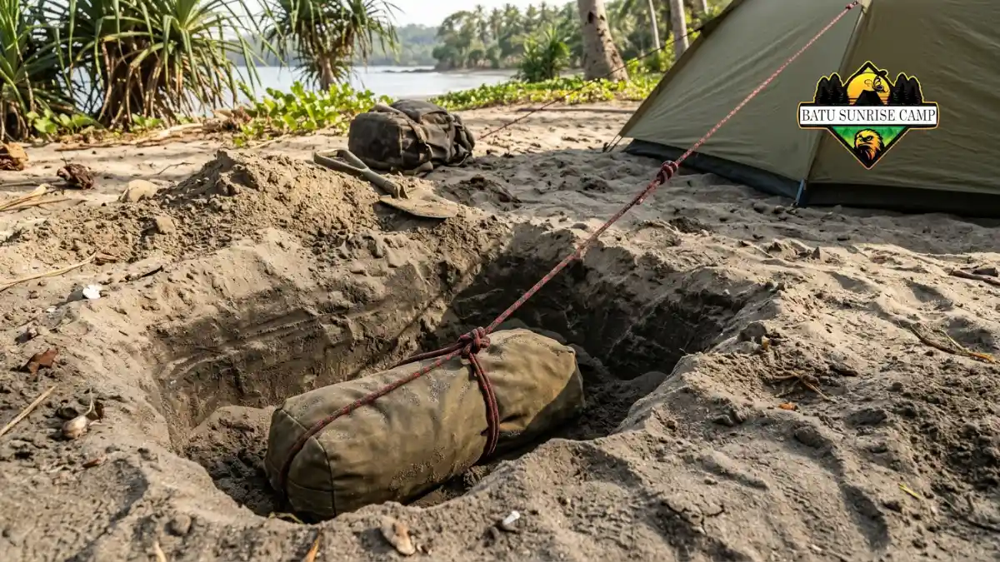

Cara memasang pasak tenda di pasir adalah menancapkan pasak miring menjauhi tenda, memakai pasak lebar atau jangkar pasir, lalu memperkuat tambatan dengan kantong terkubur.
- Pasir lepas memberi daya cengkeram kecil, sehingga pasak biasa mudah tercabut.
- Pasak lebar atau bergalur dan jangkar kantong lebih sesuai untuk pasir.
- Pasak ditancapkan dalam dengan sudut miring menjauhi tenda.
- Teknik dead man anchor memakai berat pasir untuk menahan tarikan tali.
- Tenda yang kencang menutup celah bawah dinding dan mengurangi pasir yang masuk.
Mengapa Pasak Biasa Mudah Lepas di Pasir?
Pasak biasa mudah lepas di pasir karena butiran pasir lepas dan kering memberi sedikit daya cengkeram, sehingga pasak tertarik keluar saat tali menegang oleh angin.
Skala ukuran butir Wentworth dari United States Geological Survey (USGS), yang masih menjadi rujukan pada 2026, mendefinisikan pasir sebagai butiran berdiameter sekitar 0,0625 sampai 2 milimeter.
Butiran sebesar itu tidak saling mengikat seperti tanah liat, sehingga mudah bergeser ketika pasak ditarik.
Pasak kawat tipis atau pasak pendek yang cocok untuk tanah padat akan terasa kokoh saat pertama ditancapkan, tetapi dapat meluncur keluar ketika angin menarik tali berulang kali. Pasir kering lebih bermasalah dibanding pasir lembap karena tidak memiliki daya rekat.
Masalah ini bukan sekadar soal tenda roboh. Pasak yang longgar membuat tenda berkibar, dan kibaran itu membuka celah bawah dinding sehingga pasir lebih mudah masuk. Strategi menyeluruh dibahas di artikel trik mencegah pasir masuk tenda.
Jenis Pasak Apa yang Cocok untuk Tanah Berpasir?
Pasak lebar berpenampang V atau bergalur, pasak pasir khusus, dan jangkar kantong umum dipakai karena permukaan kontaknya lebih luas daripada pasak kawat tipis.
Pasak berpenampang V atau Y memiliki sisi lebar yang menahan pasir di sekelilingnya. Pasak bergalur menambah luas kontak tanpa menambah banyak bobot. Pasak khusus pasir biasanya lebih panjang dan lebar sehingga memegang lapisan yang lebih dalam.
Jangkar kantong berupa kantong kain atau plastik kuat yang diisi pasir lalu dikubur, kemudian talinya diikatkan ke kantong. Jenis ini ringan saat dibawa karena kantong diisi di lokasi.
Alternatif lain yang umum adalah memanfaatkan benda yang tersedia, seperti tongkat kayu, batu besar, atau botol berisi pasir. Pilih benda yang kuat dan aman, serta jangan merusak lingkungan sekitar.
Setiap pilihan memiliki batasan, misalnya pasak panjang lebih berat dan jangkar kantong memerlukan waktu menggali.
Bagaimana Cara Menancapkan Pasak dengan Benar?
Tancapkan pasak sedalam mungkin dengan sudut sekitar 45 derajat menjauhi tenda, pilih pasir lembap bila ada, dan pastikan tali terkait kuat pada pasak.
Sudut miring membuat tarikan tali tidak mengangkat pasak lurus ke atas, melainkan menekannya ke pasir di sekelilingnya. Arahkan ujung pasak menjauhi tenda sehingga tali dan pasak membentuk sudut yang kokoh.
Bila pasir di permukaan kering dan gembur, gali sedikit sampai menemukan lapisan yang lebih lembap atau padat. Tancapkan pasak di sana. Tekan pasir di sekitar pasak dengan kaki atau telapak tangan agar lebih rapat.
Setelah pasak tertanam, kaitkan tali pada bagian pasak yang menahan, bukan pada ujung yang mudah terlepas.
Tarik tali perlahan untuk menguji kekuatan. Bila pasak bergerak, tancapkan lebih dalam atau pindahkan ke posisi lain.
Apa Itu Teknik Dead Man Anchor dan Kapan Dipakai?
Dead man anchor adalah teknik mengubur benda penahan, seperti kantong pasir atau tongkat berikat tali, secara mendatar sehingga tarikan angin ditahan berat pasir di atasnya.

Teknik dead man anchor menggunakan kantong berisi pasir yang dikubur mendatar di dalam lubang sehingga berat pasir di atasnya menahan tarikan tali tenda.
Teknik ini dipakai saat pasak biasa tidak cukup menahan, misalnya pada pasir kering yang sangat gembur atau saat angin kencang.
Prinsipnya sederhana: benda yang dikubur mendatar tidak mudah tertarik keluar karena harus mengangkat seluruh pasir di atasnya.
Langkahnya sebagai berikut. Gali lubang selebar benda penahan dan sedalam sekitar satu jengkal atau lebih. Ikat tali di bagian tengah benda dan letakkan mendatar di dasar lubang.
Buat alur kecil untuk tali menuju ke atas dengan sudut miring menjauhi tenda. Timbun dan padatkan pasir.
Teknik ini membutuhkan lebih banyak waktu dan tenaga. Karena itu, gunakan pada titik paling rawan, seperti sisi yang menghadap angin, dan bukan pada setiap sudut.
Bagaimana Mengatur Tali dan Ketegangan Tenda?
Atur tali penahan dengan ketegangan merata dan sudut sekitar 45 derajat, lalu periksa ulang setelah beberapa jam karena pasir dapat bergeser dan membuat tali mengendur.
Tali yang terlalu kencang pada satu sisi dan kendur di sisi lain membuat kain tidak merata dan celah muncul. Tarik setiap tali sampai kain terasa rata, tetapi jangan sampai merobek jahitan atau menekuk rangka.
Gunakan pengatur tali yang dapat disetel agar penyesuaian mudah dilakukan. Tandai tali dengan pita atau bahan reflektif agar terlihat dan tidak membuat orang tersandung, terutama pada malam hari.
Setelah memasang, periksa kembali pada sore dan sebelum tidur. Perubahan suhu dan angin dapat mengubah kekencangan tali.
Pemeriksaan singkat ini menjaga tenda tetap rapat dan mengurangi risiko tenda rusak saat angin bertambah kencang.
Kesalahan Umum Saat Memasang Pasak di Pasir
Kesalahan umum meliputi menancapkan pasak tegak lurus, memakai pasak tipis, menaruh pasak terlalu dekat tenda, dan tidak memeriksa ulang ketegangan tali setelah tenda terpasang.
Pasak tegak lurus mudah tercabut karena tarikan tali langsung mengangkatnya. Pasak tipis memiliki luas kontak kecil sehingga tidak menahan pasir.
Pasak yang terlalu dekat dengan tenda membuat sudut tali terlalu curam dan tidak efektif menahan tarikan.
Kesalahan lain adalah menancapkan pasak di pasir kering permukaan tanpa menggali ke lapisan yang lebih padat. Ada pula kebiasaan mengabaikan pasak tambahan pada tali penahan, padahal tali ini menopang flysheet saat angin.
Pasak yang sudah terpasang juga perlu diperiksa ulang. Pasir dapat bergeser setelah beberapa jam sehingga pasak yang awalnya kokoh menjadi longgar. Pemeriksaan sederhana dapat mencegah tenda roboh pada malam hari.
Bagaimana Hubungan Pasak dengan Pasir Tidak Masuk Tenda?
Pasak yang kuat membuat tenda tidak berkibar, sehingga celah bawah dinding tetap tertutup dan pasir lebih sulit terbawa angin masuk ke ruang tidur.
Tenda yang berkibar berfungsi seperti pompa kecil. Setiap kibaran mengangkat tepi flysheet dan memasukkan udara bersama butiran pasir. Dengan pasak dan tali yang kuat, tepi flysheet tetap rendah dan stabil.
Pasak juga menjaga bentuk tenda sehingga ventilasi dan pintu bekerja sesuai rancangan. Tenda yang miring atau kendur sering membuat resleting tertekan dan sulit ditutup rapat, yang menjadi jalur masuk pasir tambahan.
Karena itu, pemasangan pasak bukan sekadar soal keamanan tenda, melainkan bagian dari pencegahan pasir. Padukan dengan cara memilih lokasi tenda di area berpasir dan cara menjaga bagian dalam tenda bebas pasir untuk hasil yang lebih menyeluruh.

Pertanyaan Umum (FAQ)